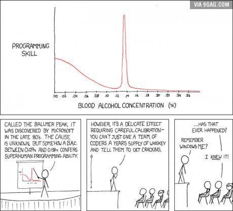
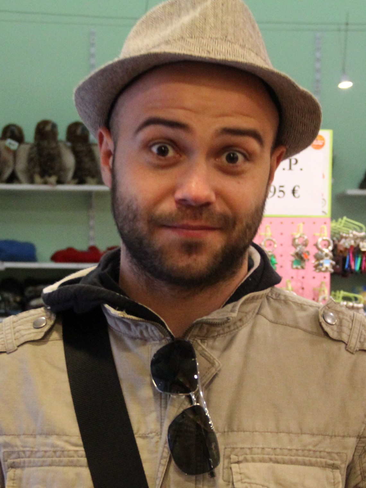
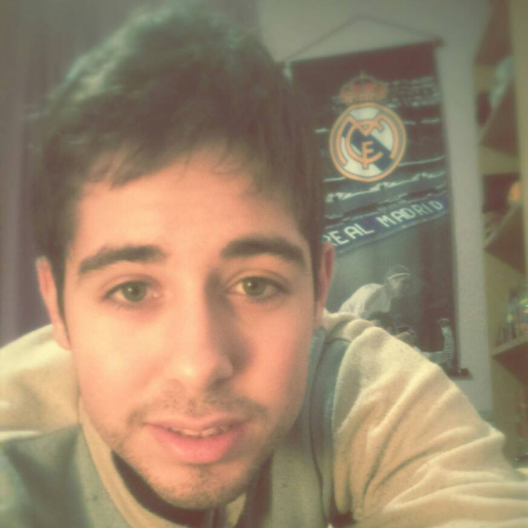

Estudiante de Ingeniería de Computadores (la más difícil de los tres grados). Emigré de Huesca en busca de una vida mejor. Mis aficiones son la siesta, la asignatura de EDA (me gusta tanto que he decidido repetirla) y la cocina creativa (como los huevos fritos).

Estudiante de Ingeniería de Computadores por la UCM y de Física por la UNED. Natural de Extremadura, tierra de olivos y conquistadores. Se mudó a Madrid en 2012 a estudiar "por aquello de hacer algo". Entre sus aficiones más conocidas está el cacharreo (normalmente con desastroso final), la música, los videojuegos, viajar "sin dinero ni nah", y los cereales por la noche.
estudiante de Ingeniería de Computadores (la más difícil de los tres grados). Emigré de Huesca en busca de una vida mejor. Mis aficiones son la siesta, la asignatura de EDA (me gusta tanto que he decidido repetirla) y la cocina creativa (como los huevos fritos).

Estudiante de la universidad complutense.Me gusta la cerveza alemana “dunkelbier” y los perritos calientes.
estudiante de Ingeniería de Computadores (la más difícil de los tres grados). Emigré de Huesca en busca de una vida mejor. Mis aficiones son la siesta, la asignatura de EDA (me gusta tanto que he decidido repetirla) y la cocina creativa (como los huevos fritos).

estudiante de Ingeniería de Computadores (la más difícil de los tres grados). Emigré de Huesca en busca de una vida mejor. Mis aficiones son la siesta, la asignatura de EDA (me gusta tanto que he decidido repetirla) y la cocina creativa (como los huevos fritos).